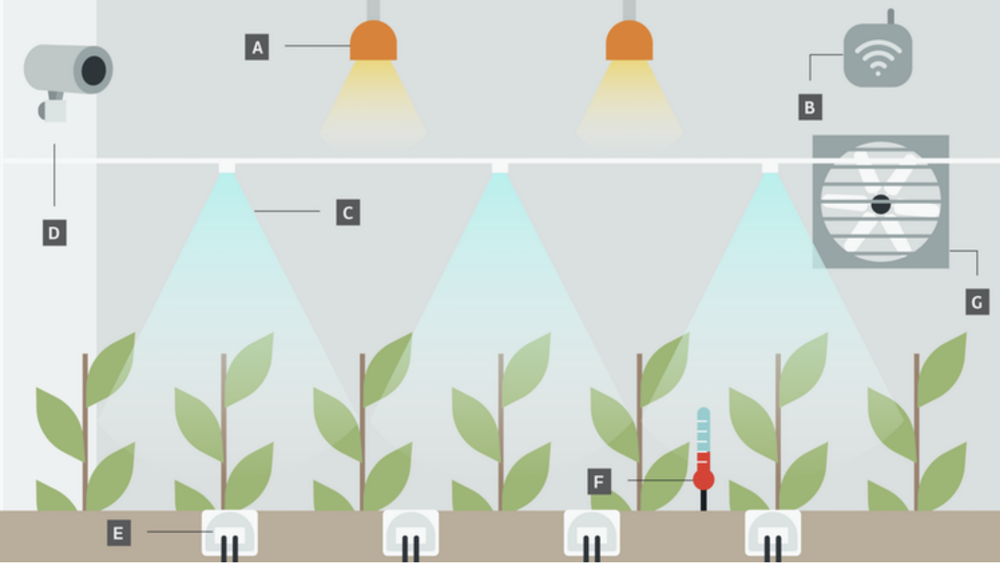

The goal of this project is to simulate code that would function within a designed climate-control system for a greenhouse. These greenhouses create optimum growing conditions for plants based on automatic conditioning in results to certain stimuli such as motion, temperature, light, water, etc.

Engineered a smart greenhouse assistant leveraging C++ and Arduino; implemented photo-transistor and potentiometer sensors to monitor key environmental factors, leading to a 30% reduction in energy consumption and a 20% increase in plant growth rate
Designed and implemented a budget overview function which provides detailed quantitative analysis, displaying budgeted amounts, actual spending, and remaining balances
Utilizes effective error-handling ensuring data integrity and prevention of duplicate budgets and allows handling of insufficient funds appropriately